The team handbook on everyone’s phone: what it does, how to get in, and how to change anything in it.
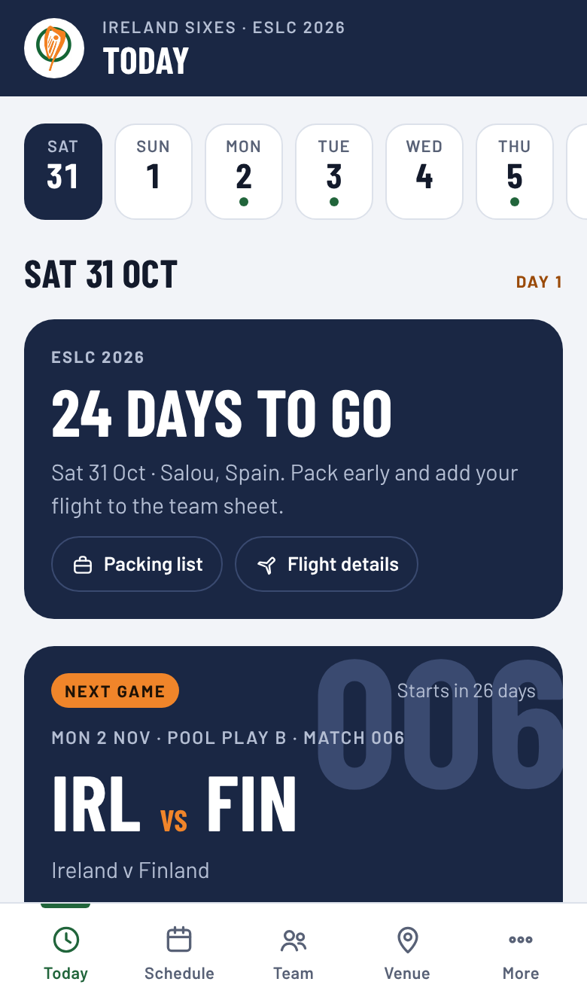
The Player Guide is the team handbook, on everyone’s phone. It replaces the Google Doc: everything a player needs for a tournament is in one place, and it’s always up to date.
Open eslc-player-guide.vercel.app in your phone’s web browser. You’ll see one box to type into. What you type decides what you can do:
For players. They can read everything, but can’t change anything. It’s shared in the team group chat.
For coaches and staff. Lets you edit the guide. Tom sends it to you privately. Please never post it in the group chat.
Then it opens like an app:
The phone remembers you. Players are only asked again if staff change the team passcode.
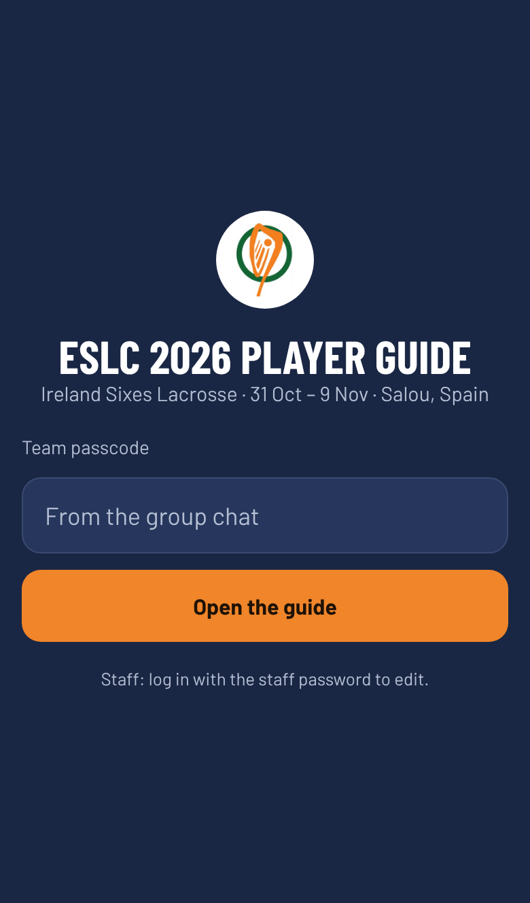
There are five tabs along the bottom of the screen. All times are local time where the tournament is.
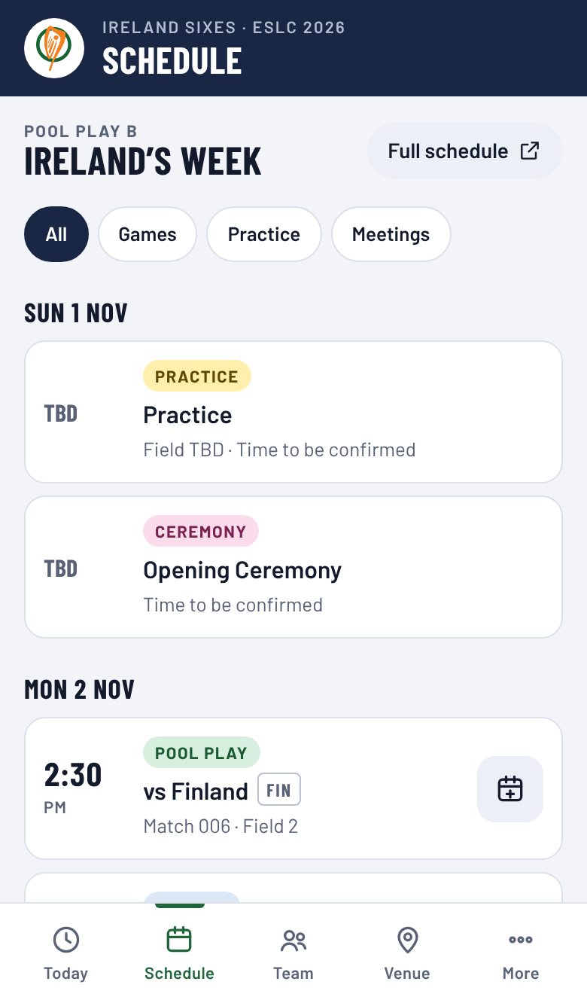
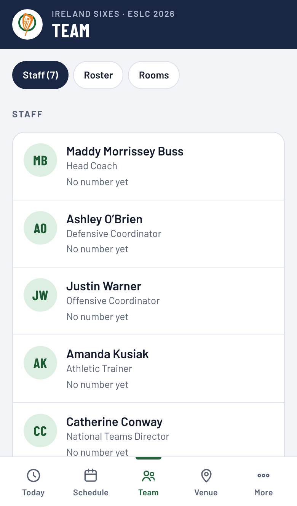
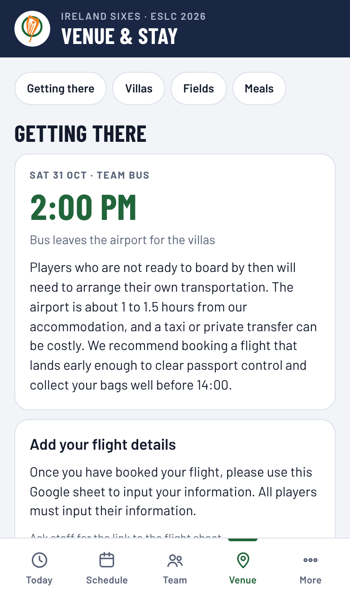
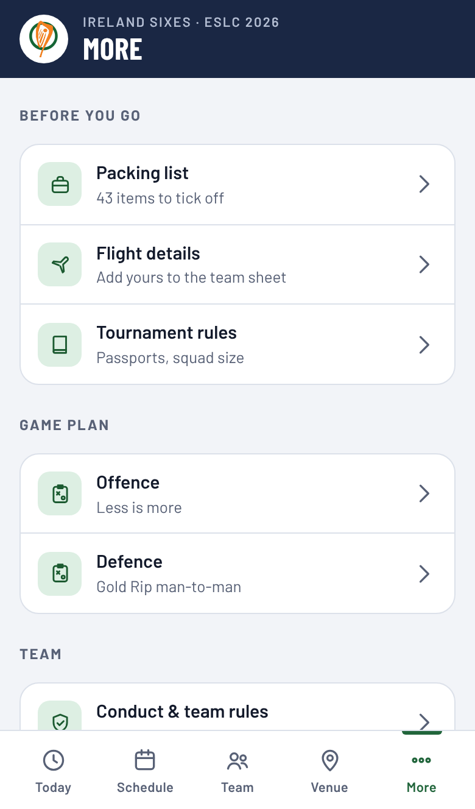
Each coach’s philosophy, in their own words, laid out as short cards. Players can open it from Quick links on Today or from More → Game plan, and it works offline. That means they can read it on the flight.
Players tick items off as they pack. Ticks are saved on their own phone only, so nobody else sees them.
Sometimes a note at the top right says Saved copy or Offline. It means the phone is showing its saved copy. It updates by itself as soon as there’s signal, and players don’t need to do anything.
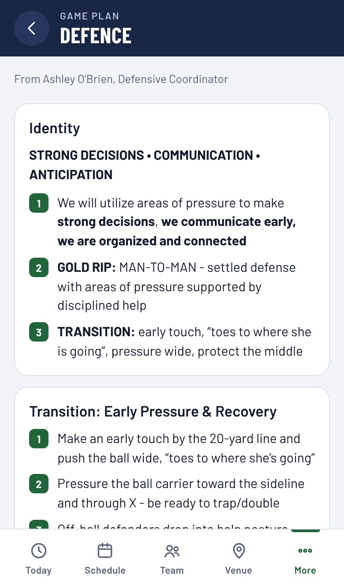
Log in with the staff password. An orange STAFF badge shows at the top, and orange Edit buttons appear on anything you can change.
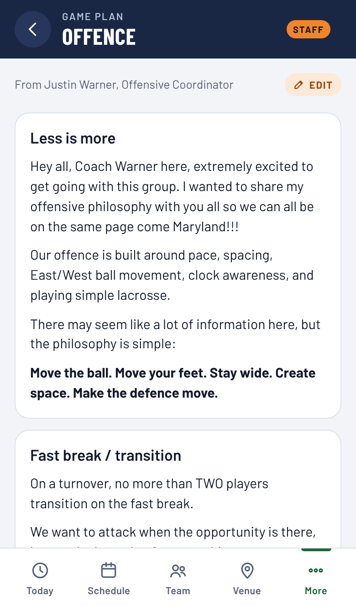
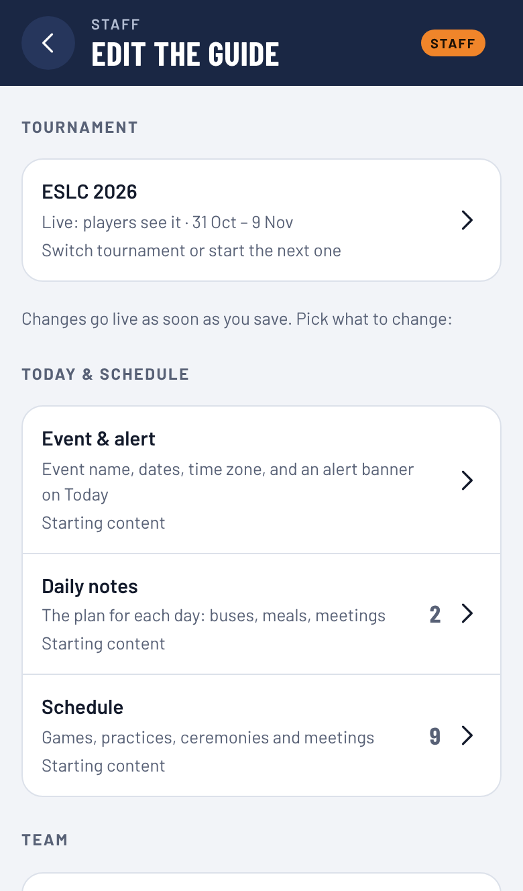
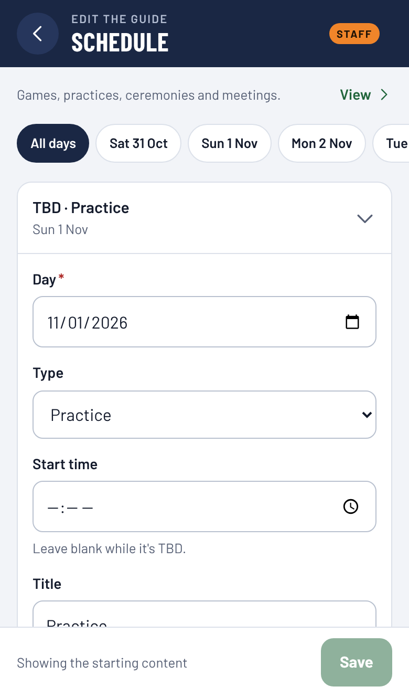
| To… | In Edit the guide, open… |
|---|---|
| Post tomorrow’s plan (buses, meals, meetings) | Daily notes. Pick the day, then Add a note. Leave the time blank if it isn’t set; players see TBC. |
| Change a game time, field or opponent | Schedule |
| Put an urgent message at the top of Today | Event & alert → Alert banner. Clear the box to hide it again. |
| Update the offence or defence | Game plan, or tap Edit on the page itself. Add a page adds another topic, like draws or clears. |
| Add a staff phone number | Staff. Include the country code (+353, +1…) so Call and WhatsApp work abroad. |
| Add or change players | Roster, and Rooming list for who’s in which villa |
| Replace a map or photo | Maps & photos. You can pick from your camera roll. |
| Change rules, conduct or activities, or add a new page | Pages |
| See, share or change the team passcode | More → Team passcode. Changing it asks every player for the new one, so share it in the group chat. Staff stay logged in. |
Pages (rules, conduct, activities) and the game plan use a simple text format. A reminder is shown under the text box:
## Heading | Starts a new card |
- item | A bullet point |
1. step | A numbered step |
**words** | Bold |
!! text | A red warning |
> text | A grey note |
[label](https://…) | A link |
Leave an empty line between paragraphs.
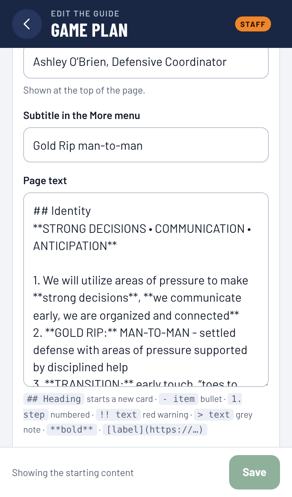
Each tournament gets its own guide. You get the new one ready while players still see the current one, then switch everyone over in one tap.
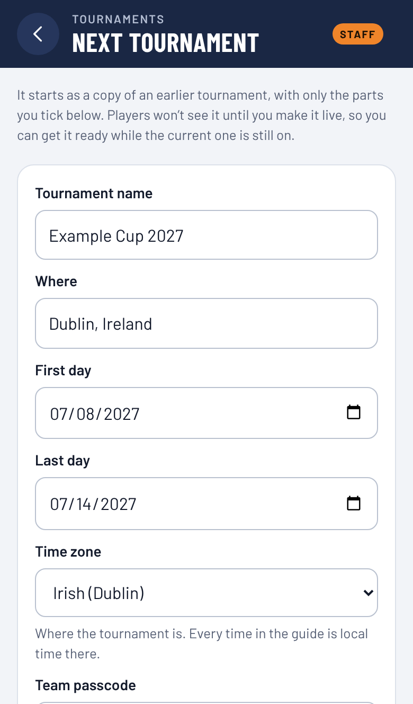
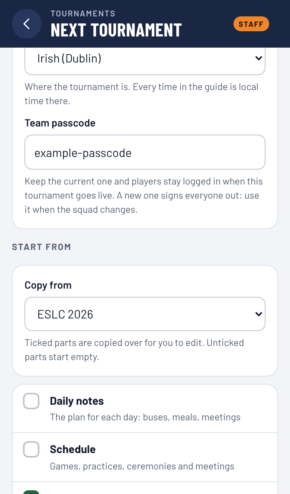
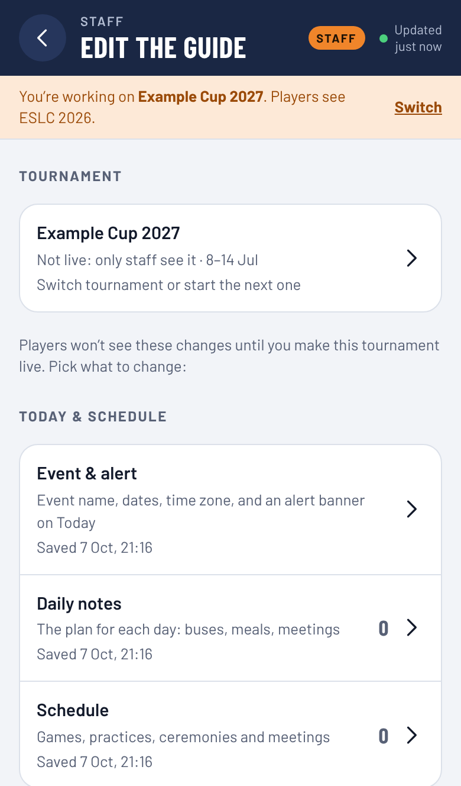
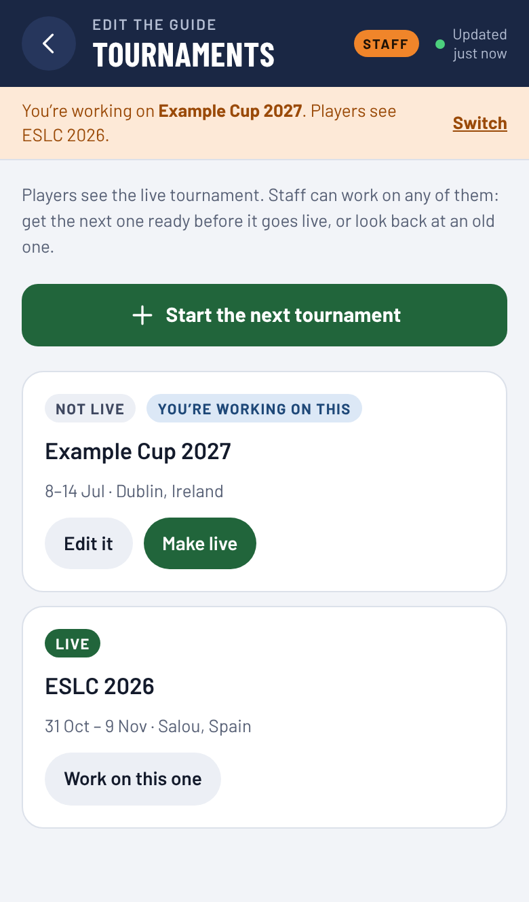
Past tournaments stay in the Tournaments list, so you can look back at them or copy from them later. Players only ever see the live one.
No. The guide updates itself whenever they open it with signal.
Anyone with the team passcode can read the whole guide, including staff phone numbers. Don’t put anything private in it, like passport numbers or medical details. Only people with the staff password can make changes.
Not yet. Everyone shares one team passcode, so the app can’t tell players apart. To check, ask in the group chat.
Before you save, just leave the page. It asks first, then drops your changes. After you save, change it back and save again.
Staff can always see it under More → Team passcode, with a button to copy it.
Yes, but only Tom can change it. Ask him if you think it has been shared too widely.
Ask them to open it with signal and wait a few seconds. If the top right still says Offline, their phone has no connection. If something still looks wrong, contact Tom.
Get in touch if something isn’t working, you need the staff password, or you’d like the app to do something new.